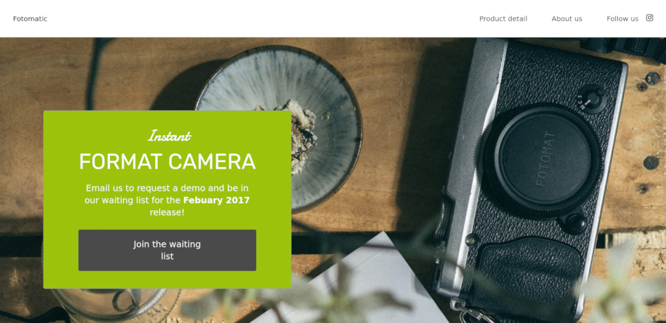
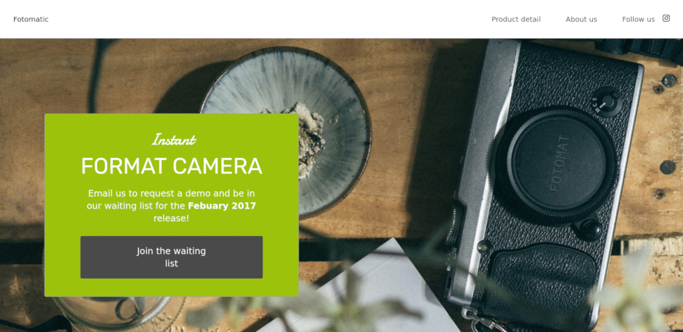

THIS IS AN INCOMPLETE WORK IN PROGRESS
About Me
Hello, my name is Dominic Bennett, welcome to my portfolio page. I've set this page up as part of a course I'm following Codecademy.
I'm working my way through the "Full Stack Engineer" course, as a kind of hobby. I already have a job unrelated to coding, but wanted to do something to expand my horizons and that might prove useful to me at some point.
Below are a selection of some of the projects I've completed so far. Feel free to have a look, constructive feedback is welcome.
Codecademy Assignment Projects
Below are a few of the projects I've completed on the Codecademy course so far.

 


Personal Projects
These are a few small personal learning projects.